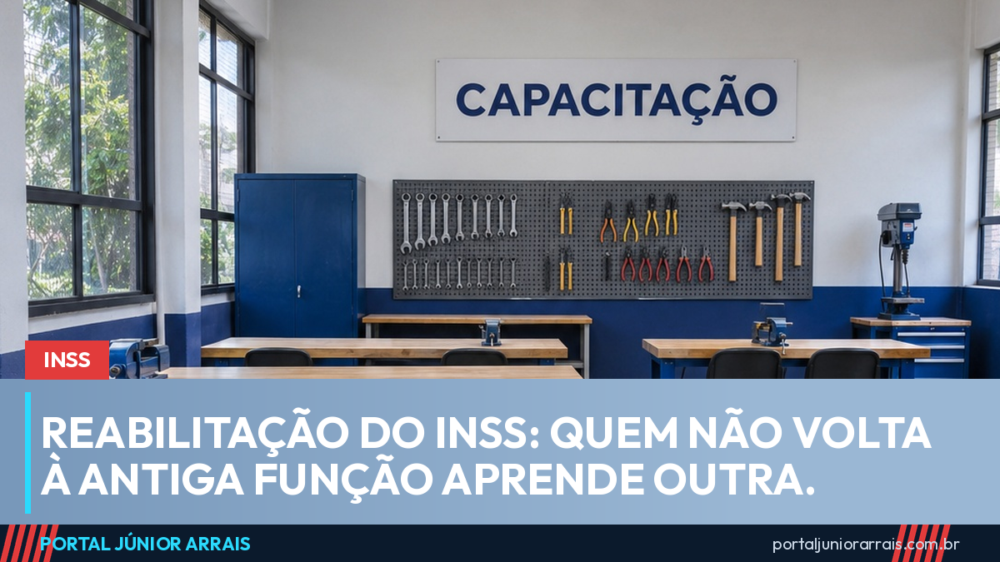

Reabilitação profissional do INSS: quem é encaminhado, o que recebe e o risco de recusar

A reabilitação profissional do INSS é um serviço para o segurado que, por doença ou acidente, não pode mais fazer o trabalho de antes, mas tem condições de exercer outra atividade. Durante o programa, o auxílio-doença continua sendo pago, e o INSS pode fornecer cursos, órteses, próteses e transporte. A participação é obrigatória para quem é encaminhado: a recusa sem motivo pode levar à suspensão do benefício.
Quem é encaminhado
A regra está no art. 62 da Lei 8.213/1991. Quando o segurado em auxílio-doença (que a lei atual chama de auxílio por incapacidade temporária) não tem como se recuperar para a sua atividade habitual, ele deve passar pela reabilitação para exercer outra função. O benefício é mantido até que ele seja considerado reabilitado ou, se não houver recuperação possível, até a aposentadoria por incapacidade permanente.
Um exemplo: o pedreiro que perdeu força no braço depois de um acidente pode não voltar à obra, mas pode aprender a trabalhar como porteiro, atendente ou em serviço administrativo. Quem decide o encaminhamento é a perícia médica do INSS. Se você ainda está no começo do afastamento, veja como funciona o auxílio-doença e a aposentadoria por incapacidade.
É obrigatório participar?
Sim. O art. 101 da Lei 8.213/1991 diz que quem recebe auxílio por incapacidade temporária, auxílio-acidente ou aposentadoria por incapacidade permanente é obrigado a fazer a perícia e a participar do processo de reabilitação profissional indicado e custeado pela Previdência, sob pena de suspensão do benefício. O art. 90 da mesma lei também trata a reabilitação como obrigatória para os segurados.
Isso não significa aceitar qualquer coisa calada. Se o curso indicado não combina com a sua limitação, se a distância é impossível ou se a saúde piorou, informe por escrito ao INSS, com laudos médicos. A lei deixa claro que cirurgia e transfusão de sangue não são obrigatórias.
O que o INSS oferece
O art. 89 da lei e o Decreto 3.048/1999 (arts. 136 a 139) preveem que, quando forem indispensáveis, o INSS pode fornecer:
- próteses, órteses e equipamentos que ajudem na locomoção;
- instrumentos e equipamentos necessários à reabilitação;
- transporte urbano e alimentação durante o programa;
- cursos e treinamentos, inclusive em empresas parceiras, sem que isso crie vínculo de emprego com elas.
O programa inclui avaliação do potencial de trabalho, orientação profissional e acompanhamento da volta ao mercado (art. 137 do decreto). A reabilitação não exige carência, ou seja, não depende de um número mínimo de contribuições (art. 136 do decreto).
O certificado e a vaga reservada
Ao fim do programa, o INSS emite um certificado individual que indica as atividades que a pessoa pode exercer (art. 92 da lei). Nada impede que ela trabalhe em outra área para a qual se capacite. O INSS, porém, não tem obrigação de recolocar o segurado no mesmo emprego ou em outro (art. 140 do decreto).
O certificado abre uma porta importante: as empresas com 100 ou mais empregados têm de reservar de 2% a 5% das vagas para reabilitados e pessoas com deficiência (art. 93 da lei):
- até 200 empregados: 2%;
- de 201 a 500: 3%;
- de 501 a 1.000: 4%;
- acima de 1.000: 5%.
Pelo § 1º do mesmo artigo, a empresa só pode dispensar sem justa causa um trabalhador dessa cota depois de contratar outro na mesma condição.
Cuidado com golpe
Golpistas ligam para segurados afastados dizendo que o benefício será cortado se a pessoa não pagar uma "inscrição" no curso de reabilitação ou não atualizar dados por um link. O programa é custeado pela Previdência e o INSS não cobra nada para incluir o segurado.
Nunca informe senha do gov.br ou dados bancários a quem liga em nome do INSS. Confirme convocações pelos canais oficiais do INSS ou na agência e, se o benefício for suspenso por recusa que você considera injusta, procure a Defensoria Pública ou um profissional de sua confiança.
Fontes oficiais
- Lei nº 8.213/1991 (Benefícios da Previdência Social), texto atualizado: arts. 62, 89 a 93 e 101
- Decreto nº 3.048/1999 (Regulamento da Previdência Social), texto atualizado: arts. 136 a 141
Conteúdo informativo — não substitui orientação individualizada sobre o seu caso.
Júnior Arrais · Editor do Portal Júnior Arrais
Comunicador de Ubá (MG). Escreve todos os dias sobre benefícios sociais, INSS, trabalho e economia do dia a dia, a partir do Diário Oficial, de portarias e de fontes oficiais, em linguagem simples. Conheça a linha editorial e a política de correções do portal.